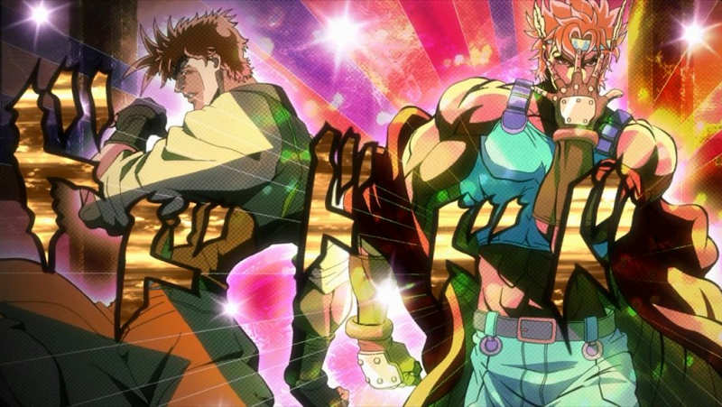
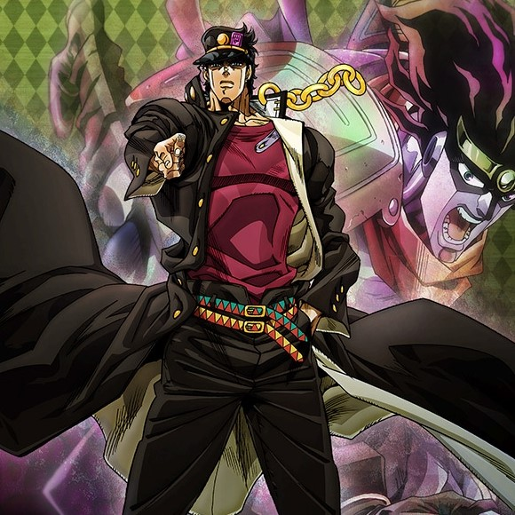
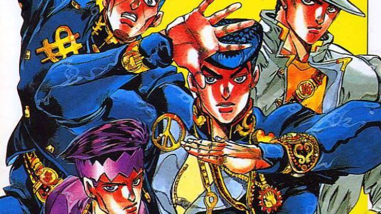

JoJo's Bizarre Adventure (Japanese: ジョジョの奇妙な冒険 Hepburn: JoJo no Kimyō na Bōken?) is a Japanese manga series written and illustrated by Hirohiko Araki. It was originally serialized in Weekly Shōnen Jump from 1987 to 2004 before being transferred to the monthly seinen magazine Ultra Jump in 2005.
Jojo's Bizarre Adventure Part 1 Jonathan Joestar
JoJo's Bizarre Adventure volumes 1 to 5. In 1880s Great Britain, the young Jonathan Joestar meets his new adopted brother Dio Brando, who only wants to usurp Jonathan as heir to the Joestar family.
Jojo's Bizarre Adventure Part 2 Joseph Joestar

JoJo's Bizarre Adventure volumes 5 to 12. In New York City in 1938, Joseph Joestar, grandson of Jonathan, who has a natural affinity for the Ripple, becomes entangled in his grandfather's destiny when the Pillar Men, supernatural beings of impossible power, awaken after failed experiments by Nazi German special forces.
Jojo's Bizarre Adventure Part 3 Jotaro Kujo

JoJo's Bizarre Adventure volumes 12 to 28. In 1989, Jotaro Kujo, a Japanese high school student, places himself in jail because he believes he is possessed by an evil spirit. His mother Holly calls on her father Joseph Joestar to talk sense into Jotaro, and with the help of his ally the Egyptian fortune teller Mohammed Avdol, reveals that Jotaro has in fact developed a supernatural ability known as a Stand that has run through the family due to the revival of their ancestor's foe Dio.
Jojo's Bizarre Adventure Part 4 Josuke Higashikata

JoJo's Bizarre Adventure volumes 29 to 47. In the fictional Japanese town of Morioh in 1999, Jotaro arrives to reveal to Josuke Higashikata (the kanji 助 in his name is read in the on'yomi form as jo) that he is the illegitimate son of Joseph Joestar and to warn him that Morioh is beginning to be filled with Stand users due to a mystical Bow and Arrow that bestows Stands on those struck by the arrowheads.